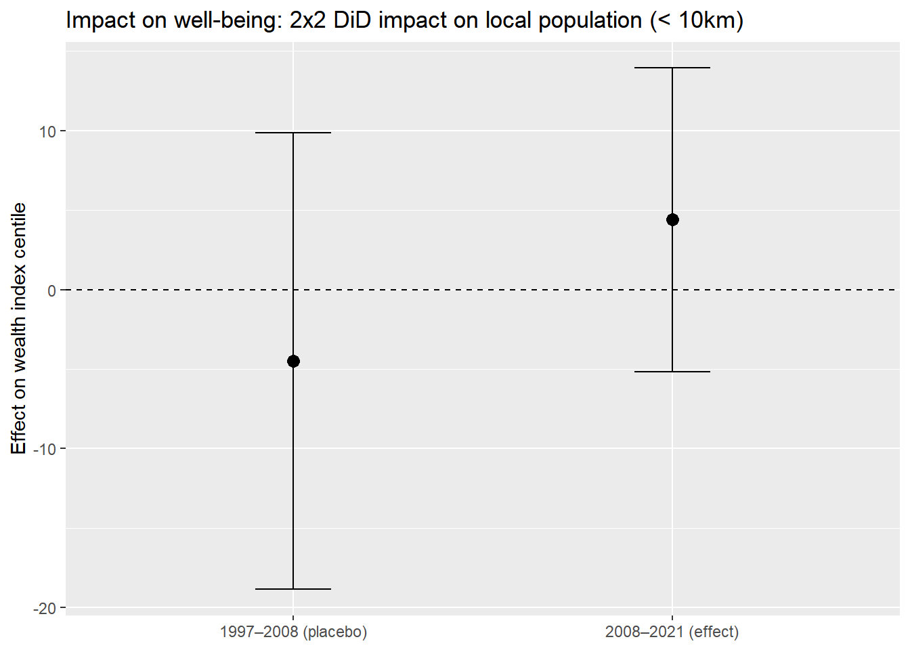

Code
library(tidyverse)
library(haven)
library(fixest)
library(broom)
library(ggplot2)
library(gt)
library(gtExtras)
library(did2s)
library(modelsummary)
library(sf) # st_drop_geometry (contrôle des bornes temporelles)
# Dictionnaire de noms de variables
var_labels <- c(
"treat_post" = "Treatment × Post",
"treat" = "Treatment",
"post" = "Post",
"spei_wc_n_1"= "SPEI (t-1)",
"treecover_area_2000" = "Tree cover 2000",
"slope_2000" = "Slope 2000",
"elevation_2000" = "Elevation 2000",
"population_count_2000" = "Population 2000",
"traveltime_2000_2000" = "Travel time 2000",
"hv219Femme" = "Female household head",
"hv220" = "Age of household head",
"(Intercept)"= "Constant"
)
# Date de référence des vagues (même définition que 01-treatment-assignation :
# 1er juin, un seul point de définition)
survey_reference_date <- function(year) {
as.Date(sprintf("%d-06-01", year))
}
# Contrôles du PAP : SPEI de l'année précédant l'enquête (t-1 uniquement),
# sexe et âge du chef de ménage, et les covariables de matching (millésimes 2000).
controls_pap <- c(
"spei_wc_n_1", "hv219", "hv220",
"treecover_area_2000", "slope_2000", "elevation_2000",
"population_count_2000", "traveltime_2000_2000"
)
fs_controls <- paste(controls_pap, collapse = " + ")
# Chargement des données
d97 <- read_rds("data/derived/data_matched_1997.rds") %>%
rename(spei_wc_n_2 = spei_wc_1995,
spei_wc_n_1 = spei_wc_1996,
spei_wc_n = spei_wc_1997) %>%
mutate(hv219 = zap_labels(hv219), # hhh sex (1/2)
hv220 = zap_labels(hv220)) # hhh age (num)
d08 <- read_rds("data/derived/data_matched_2008.rds") %>%
rename(spei_wc_n_2 = spei_wc_2006,
spei_wc_n_1 = spei_wc_2007,
spei_wc_n = spei_wc_2008) %>%
mutate(hv219 = zap_labels(hv219),
hv220 = zap_labels(hv220))
d11 <- read_rds("data/derived/data_matched_2011.rds") %>%
rename(spei_wc_n_2 = spei_wc_2009,
spei_wc_n_1 = spei_wc_2010,
spei_wc_n = spei_wc_2011) %>%
mutate(hv219 = zap_labels(hv219),
hv220 = zap_labels(hv220))
d13 <- read_rds("data/derived/data_matched_2013.rds") %>%
rename(spei_wc_n_2 = spei_wc_2011,
spei_wc_n_1 = spei_wc_2012,
spei_wc_n = spei_wc_2013) %>%
mutate(hv219 = zap_labels(hv219),
hv220 = zap_labels(hv220))
d16 <- read_rds("data/derived/data_matched_2016.rds") %>%
rename(spei_wc_n_2 = spei_wc_2014,
spei_wc_n_1 = spei_wc_2015,
spei_wc_n = spei_wc_2016) %>%
mutate(hv219 = zap_labels(hv219),
hv220 = zap_labels(hv220))
d18 <- read_rds("data/derived/data_matched_2018.rds") %>%
rename(spei_wc_n_2 = spei_wc_2016,
spei_wc_n_1 = spei_wc_2017,
spei_wc_n = spei_wc_2018) %>%
mutate(hv219 = zap_labels(hv219),
hv220 = zap_labels(hv220))
d21 <- read_rds("data/derived/data_matched_2021.rds") %>%
rename(spei_wc_n_2 = spei_wc_2019,
spei_wc_n_1 = spei_wc_2020,
spei_wc_n = spei_wc_2021) %>%
mutate(hv219 = zap_labels(hv219),
hv220 = zap_labels(hv220))
# Préparation des données
dat <- bind_rows(d97, d08, d11, d13, d16, d18, d21) %>%
filter(GROUP %in% c("Treatment","Control")) %>%
mutate(
hv219 = factor(hv219, levels = c(1,2), labels = c("Homme","Femme")), # sexe (cat.)
hv220 = as.numeric(hv220), # âge
treat = as.integer(GROUP == "Treatment"), # appartenance au groupe de traitement éventuel (PAP), pas treated_now
treatment_date = as.Date(treatment_date),
survey_ref_date = survey_reference_date(DHSYEAR),
w_svy = hv005 / 1e6,
w_all = w_svy * weights, # poids d'enquête × poids de matching (si 'weights' existe)
id = row_number(),
cluster_uid = interaction(DHSYEAR, hv001, drop = TRUE)
)
# Assertion : la classification comporte bien les dates de traitement attendues
stopifnot(
"07 : date de traitement manquante pour des observations Treatment" =
all(!is.na(dat$treatment_date[dat$treat == 1])),
"07 : date de traitement présente pour des observations Control" =
all(is.na(dat$treatment_date[dat$treat == 0]))
)
# Outcome h
yvar <- "wealth_centile_rural_weighted"
# fixest DID 2×2: placebo 1997–2008, traitement 2008–2021 ------------------
# Placebo 1997–2008
pre <- dat %>%
filter(DHSYEAR %in% c(1997, 2008)) %>%
mutate(post = as.integer(DHSYEAR == 2008),
treat_post = treat * post)
f_pre <- as.formula(paste(
yvar, "~ treat + post + treat_post +", fs_controls
))
h1_m_pre_2x2 <- feols(f_pre, data = pre, weights = ~ w_all, cluster = ~ cluster_uid)
# Traitement 2008–2021
main <- dat %>%
filter(DHSYEAR %in% c(2008, 2021)) %>%
mutate(post = as.integer(DHSYEAR == 2021),
treat_post = treat * post)
f_main <- f_pre # même formule
# Contrôle de cohérence des bornes temporelles avant le DiD principal :
# les Traités de 2021 doivent être effectivement traités à la date de
# référence de 2021 ; les éventuels Traités déjà traités en 2008 sont
# signalés explicitement (AP concernées).
endpoint_check <- dat %>%
st_drop_geometry() %>%
filter(GROUP == "Treatment") %>%
group_by(DHSYEAR) %>%
summarise(
n_treatment = n(),
n_already = sum(treated_now == 1),
n_not_yet = sum(treated_now == 0),
share_not_yet = mean(treated_now == 0),
untreated_pas = paste(sort(unique(WDPAID[treated_now == 0])),
collapse = ";"),
.groups = "drop"
)
print(endpoint_check)# A tibble: 7 × 6
DHSYEAR n_treatment n_already n_not_yet share_not_yet untreated_pas
<dbl> <int> <int> <int> <dbl> <chr>
1 1997 335 0 335 1 "555549452;555697874;55…
2 2008 1155 0 1155 1 "166880;555547961;55554…
3 2011 441 409 32 0.0726 "555697874"
4 2013 724 692 32 0.0442 "555697901"
5 2016 637 637 0 0 ""
6 2018 1194 1168 26 0.0218 "555790168"
7 2021 1601 1601 0 0 "" Code
# Garde-fou strict : pour le dessin principal 2008–2021, tout Traité de
# 2008 doit être non traité à la date de référence de la baseline, et tout
# Traité de 2021 doit être traité à celle du end-point. En cas de violation,
# les AP concernées sont listées (WDPAID, date de traitement, effectifs de
# grappes et de ménages).
endpoint_violations_2021 <- dat %>%
st_drop_geometry() %>%
filter(GROUP == "Treatment", DHSYEAR == 2021, treated_now == 0) %>%
count(WDPAID, treatment_date, name = "n_households") %>%
mutate(n_clusters = vapply(WDPAID, function(id) {
n_distinct(dat$cluster_uid[dat$GROUP == "Treatment" & dat$DHSYEAR == 2021 &
dat$treated_now == 0 & dat$WDPAID == id])
}, numeric(1)))
stopifnot(
"07 : des observations Treatment de 2008 sont déjà traitées à la baseline" =
all(endpoint_check$n_already[endpoint_check$DHSYEAR == 2008] == 0),
"07 : des observations Treatment de 2021 ne sont pas encore traitées à la date de référence" =
all(endpoint_check$n_not_yet[endpoint_check$DHSYEAR == 2021] == 0)
)
h1_m_main_2x2 <- feols(f_main, data = main, weights = ~ w_all, cluster = ~ cluster_uid)
etable(h1_m_pre_2x2, h1_m_main_2x2,
headers = c("Placebo 97–08", "Traitement 08–21")) h1_m_pre_2x2
Placebo 97–08
Dependent Var.: wealth_centile_rural_weighted
Constant 32.14*** (4.762)
treat 1.687 (6.039)
post -2.773 (3.172)
treat_post -4.503 (7.321)
spei_wc_n_1 -1.494 (1.999)
hv219Femme -0.7860 (0.7901)
hv220 0.0983*** (0.0219)
treecover_area_2000 0.0004* (0.0002)
slope_2000 -0.7476* (0.3168)
elevation_2000 0.0141*** (0.0031)
population_count_2000 0.0831* (0.0333)
traveltime_2000_2000 -0.0043 (0.0092)
_____________________ _____________________________
S.E.: Clustered by: cluster_uid
Observations 10,731
R2 0.08918
Adj. R2 0.08825
h1_m_main_2x2
Traitement 08–21
Dependent Var.: wealth_centile_rural_weighted
Constant 28.64*** (4.210)
treat -2.523 (4.033)
post 2.679 (2.069)
treat_post 4.397 (4.871)
spei_wc_n_1 -2.976 (1.906)
hv219Femme -2.911*** (0.6887)
hv220 0.0537** (0.0179)
treecover_area_2000 0.0002 (0.0002)
slope_2000 -0.2110 (0.2902)
elevation_2000 0.0079** (0.0028)
population_count_2000 0.1195*** (0.0352)
traveltime_2000_2000 0.0130 (0.0081)
_____________________ _____________________________
S.E.: Clustered by: cluster_uid
Observations 15,001
R2 0.05044
Adj. R2 0.04974
---
Signif. codes: 0 '***' 0.001 '**' 0.01 '*' 0.05 '.' 0.1 ' ' 1Code
tab_fixest <- modelsummary(
list("Placebo 97-08" = h1_m_pre_2x2, "Traitement 08-21" = h1_m_main_2x2),
coef_rename = var_labels, output = "gt"
)
saveRDS(tab_fixest, "paper/tables/table_DID_WI.rds")
# Extraction compacte des deux effets DID
did_row <- function(model, year_post, vc = ~ cluster_uid, term = "treat_post"){
summary(model, vcov = vc) %>% broom::tidy() %>%
filter(term == !!term) %>%
transmute(year = year_post, estimate, se = std.error)
}
did_df <- bind_rows(
did_row(h1_m_pre_2x2, 2008),
did_row(h1_m_main_2x2, 2021)
) %>%
mutate(period = factor(ifelse(year == 2008, "1997–2008 (placebo)", "2008–2021 (effect)"),
levels = c("1997–2008 (placebo)", "2008–2021 (effect)")),
lo = estimate - 1.96*se,
hi = estimate + 1.96*se)
h1_2x2_plot <- ggplot(did_df, aes(x = period, y = estimate)) +
geom_hline(yintercept = 0, linetype = "dashed") +
geom_errorbar(aes(ymin = lo, ymax = hi), width = .2) +
geom_point(size = 3) +
labs(x = NULL, y = "Effect on wealth index centile",
title = "Impact on well-being: 2x2 DiD impact on local population (< 10km)")
h1_2x2_plot
Code
write_rds(h1_2x2_plot, "paper/figures/h1_2x2_plot.rds")
h1_2x2_table <- modelsummary(
list(
"DID 2x2 placebo (1997-2008)" = h1_m_pre_2x2,
"DID 2x2 (2008-2021)" = h1_m_main_2x2
),
coef_rename = var_labels
)
write_rds(h1_2x2_table, "paper/figures/h1_2x2_table.rds")
h1_2x2_table| DID 2x2 placebo (1997-2008) | DID 2x2 (2008-2021) | |
|---|---|---|
| Constant | 32.141 | 28.643 |
| (4.762) | (4.210) | |
| Treatment | 1.687 | -2.523 |
| (6.039) | (4.033) | |
| Post | -2.773 | 2.679 |
| (3.172) | (2.069) | |
| Treatment × Post | -4.503 | 4.397 |
| (7.321) | (4.871) | |
| SPEI (t-1) | -1.494 | -2.976 |
| (1.999) | (1.906) | |
| Female household head | -0.786 | -2.911 |
| (0.790) | (0.689) | |
| Age of household head | 0.098 | 0.054 |
| (0.022) | (0.018) | |
| Tree cover 2000 | 0.000 | 0.000 |
| (0.000) | (0.000) | |
| Slope 2000 | -0.748 | -0.211 |
| (0.317) | (0.290) | |
| Elevation 2000 | 0.014 | 0.008 |
| (0.003) | (0.003) | |
| Population 2000 | 0.083 | 0.120 |
| (0.033) | (0.035) | |
| Travel time 2000 | -0.004 | 0.013 |
| (0.009) | (0.008) | |
| Num.Obs. | 10731 | 15001 |
| R2 | 0.089 | 0.050 |
| R2 Adj. | 0.088 | 0.050 |
| AIC | 100825.0 | 141246.5 |
| BIC | 100912.4 | 141337.9 |
| RMSE | 26.52 | 26.79 |
| Std.Errors | by: cluster_uid | by: cluster_uid |
Code
# Format Latex
modelsummary(
list(
"DID 2x2 placebo (1997-2008)" = h1_m_pre_2x2,
"DID 2x2 (2008-2021)" = h1_m_main_2x2
),
coef_rename = var_labels,
vcov = ~ cluster_uid,
stars = c("*" = .1, "**" = .05, "***" = .01),
gof_map = list(
list(raw = "nobs", clean = "Observations", fmt = 0),
list(raw = "r.squared", clean = "R²", fmt = 3),
list(raw = "adj.r.squared", clean = "Adjusted R²", fmt = 3)
),
title = "Impact on well-being: 2x2 DiD",
notes = "Standard errors clustered at the survey cluster level.",
output = "paper/tables/h1_2x2_table.tex"
)